V.0.4.00 · 1920×1080 (16:9 가로형 시네마 규격)
2026 내가 소개하는 서울 숏폼 공모전
주연·성우: 이지원 1인 단독 (57.34초)
『낮부터 밤까지, 여러분의 프레임이 되어 드립니다』 — 16:9 가로형 구도 & 프리뷰 스토리보드
“많은 사람들이 이용하는 교통시설에서 우리는 창을 통해 세상을 바라봐요. 같지만 다른 풍경이 기다리고 있는 오늘, 낮부터 밤까지, 여러분의 프레임이 되어 드립니다.”
CUT 01
아침 08:00 · 시내버스 와이드 차창 프레임 (이지원 첫 등장)
감정톤: calm (서정 평온)
👤 이지원 등장
📐 Frame A · 16:9 가로형 평면 프레임 기본 구도 (전환 전)
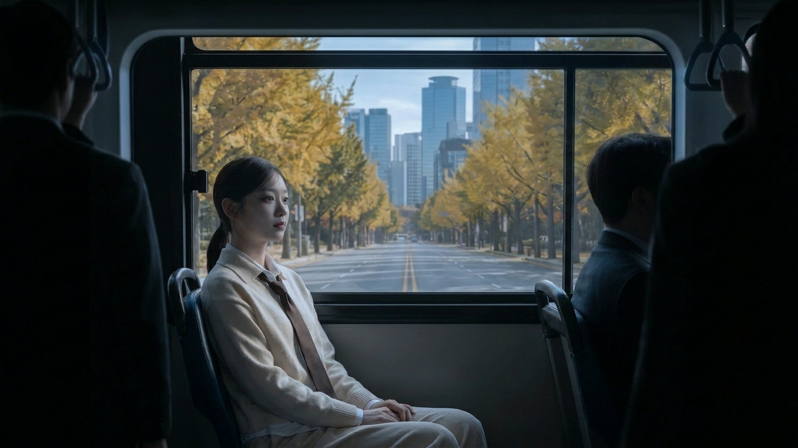
차분한 아침 거리 + 좌우 승객 실루엣 + 와이드 차창 옆 이지원 구도
✨ Frame B · 16:9 서울 도시풍경·조명 정밀 완성본 (클릭 시 1920×1080 원본)
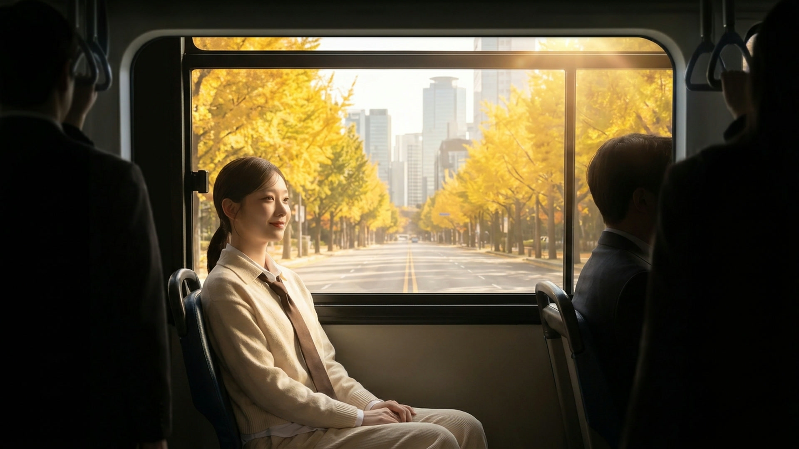
노란 은행나무 가로수길 햇살 플레어와 희망찬 미소로 승격 편집
CUT 02
오전 10:30 · 전철 한강철교 와이드 전망 프레임
감정톤: happy (설렘·환희)
🎙 이지원 감성 VO · 와이드 평면 프레임
📐 Frame A · 16:9 가로형 평면 프레임 기본 구도 (전환 전)
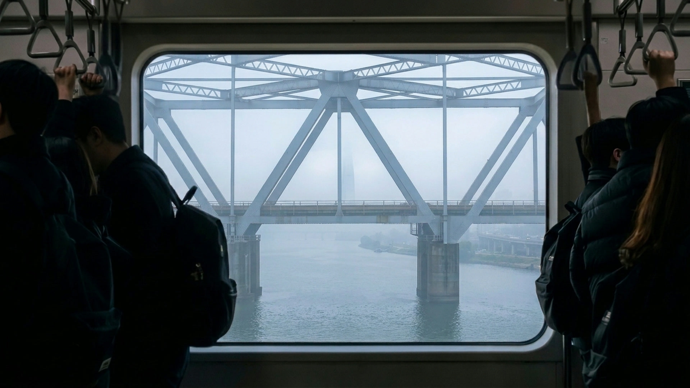
좌우 입석 시민 실루엣 사이 한강철교 트러스로 진입하는 16:9 전철 창
✨ Frame B · 16:9 서울 도시풍경·조명 정밀 완성본 (클릭 시 1920×1080 원본)
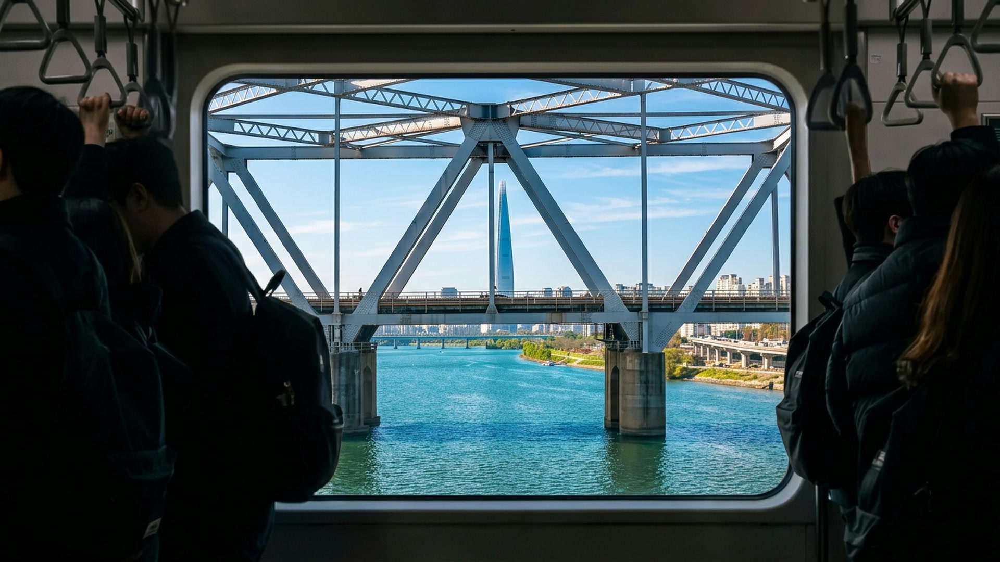
와이드 창문 가득 펼쳐지는 철교 트러스·청록빛 한강·잠실 롯데월드타워
CUT 03
낮 13:00 · 지상 전철 라운드 와이드 창문 (작가님 표준 구도)
감정톤: curious (맑은 호기심)
🎙 이지원 감성 VO · 와이드 평면 프레임
📐 Frame A · 16:9 가로형 평면 프레임 기본 구도 (전환 전)
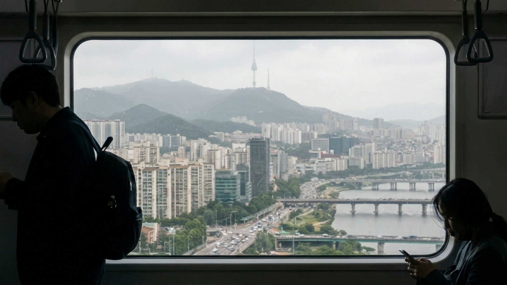
좌측 백팩 시민·우측 휴대폰 승객 실루엣 사이 은은한 낮 남산 능선
✨ Frame B · 16:9 서울 도시풍경·조명 정밀 완성본 (클릭 시 1920×1080 원본)
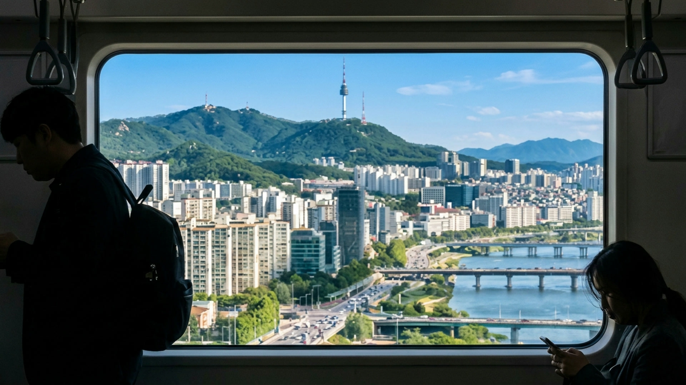
쾌청한 하늘 아래 초록 남산 능선·남산서울타워·한강 교량 파노라마 완성
CUT 04
오후 15:30 · 시내버스 고궁 단풍 와이드 투어 프레임
감정톤: happy (따뜻한 기쁨)
🎙 이지원 감성 VO · 와이드 평면 프레임
📐 Frame A · 16:9 가로형 평면 프레임 기본 구도 (전환 전)
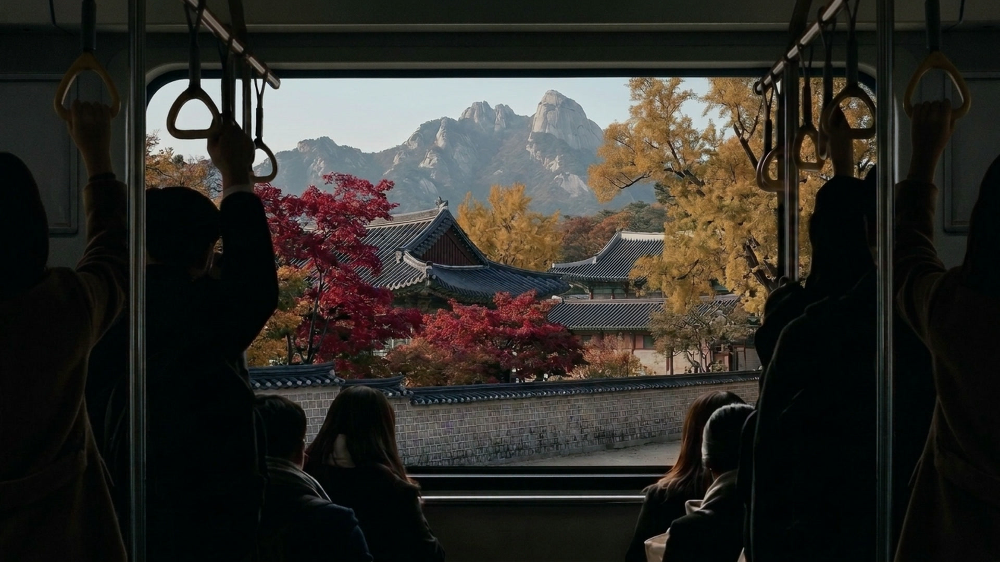
좌우 버스 승객 실루엣 사이 고궁 돌담길 초입 16:9 사각 차창
✨ Frame B · 16:9 서울 도시풍경·조명 정밀 완성본 (클릭 시 1920×1080 원본)
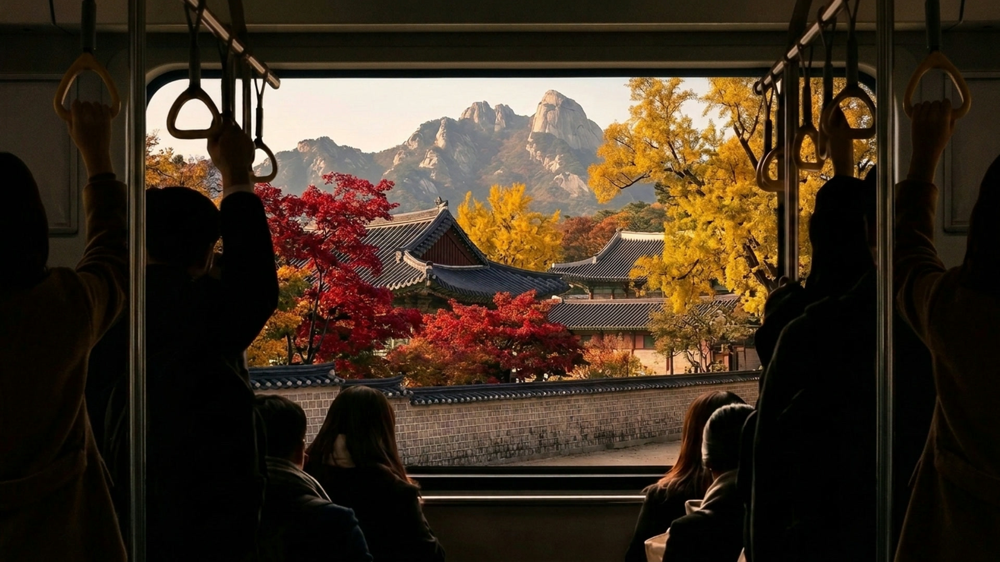
와이드 차창 가득 경복궁 기와지붕·돌담길·진홍 단풍·북악산 암봉 편집
CUT 05
해질녘 17:15 · 여의도 선착장 와이드 통유리 프레임
감정톤: curious (노을빛 기대)
🎙 이지원 감성 VO · 와이드 평면 프레임
📐 Frame A · 16:9 가로형 평면 프레임 기본 구도 (전환 전)
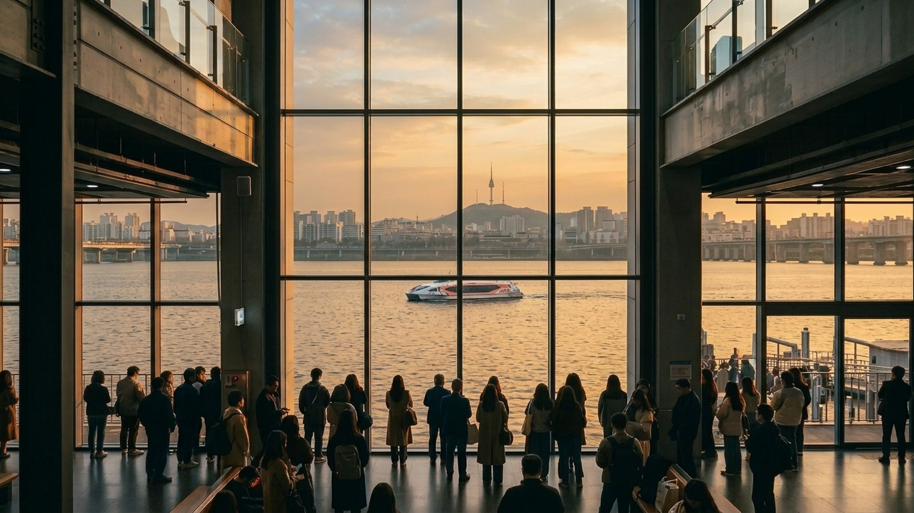
선착장 대합실 와이드 통유리 창틀과 원거리 접근 중인 수상버스
✨ Frame B · 16:9 서울 도시풍경·조명 정밀 완성본 (클릭 시 1920×1080 원본)
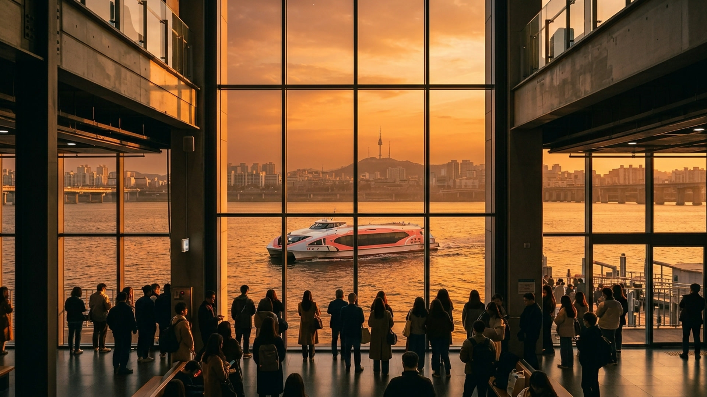
주홍빛 석양 한강 물결 위로 선착장에 입항하는 화이트·코랄 한강버스
CUT 06
노을 17:45 · 여의도 한강버스 선실 파노라마 프레임
감정톤: whisper (감성 독백)
🎙 이지원 감성 VO · 와이드 평면 프레임
📐 Frame A · 16:9 가로형 평면 프레임 기본 구도 (전환 전)
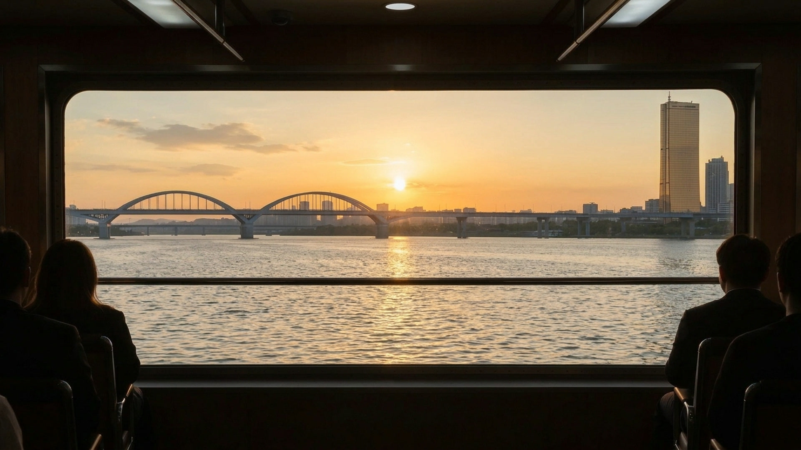
좌우 좌석 승객 실루엣 사이 늦오후 물결의 16:9 선실 파노라마 창
✨ Frame B · 16:9 서울 도시풍경·조명 정밀 완성본 (클릭 시 1920×1080 원본)
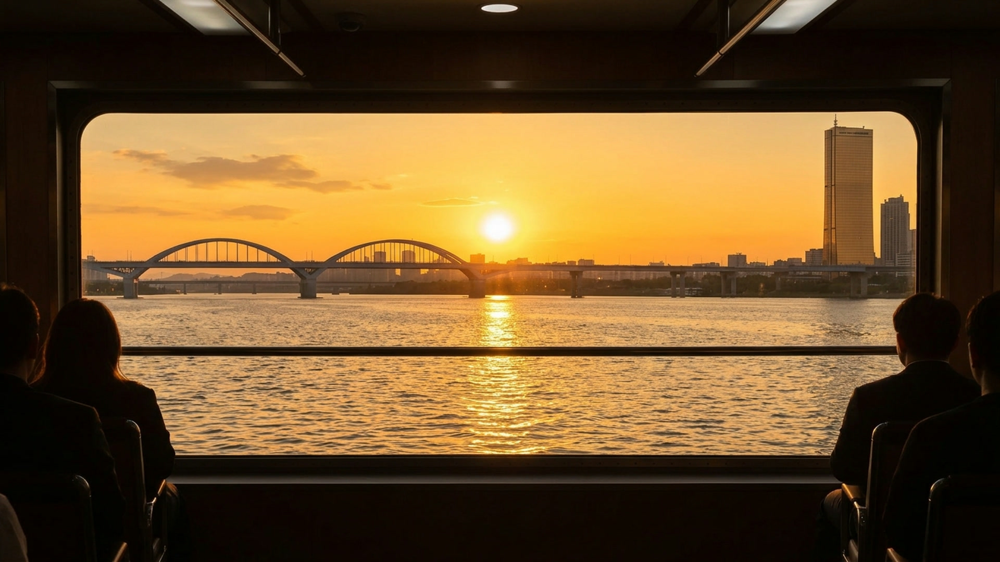
타오르는 석양 태양과 황금빛 윤슬·여의도 63빌딩·원효대교 파노라마 완성
CUT 07
매직아워 18:30 · 한강버스 야경 파노라마 프레임
감정톤: calm (매직아워 여운)
🎙 이지원 감성 VO · 와이드 평면 프레임
📐 Frame A · 16:9 가로형 평면 프레임 기본 구도 (전환 전)
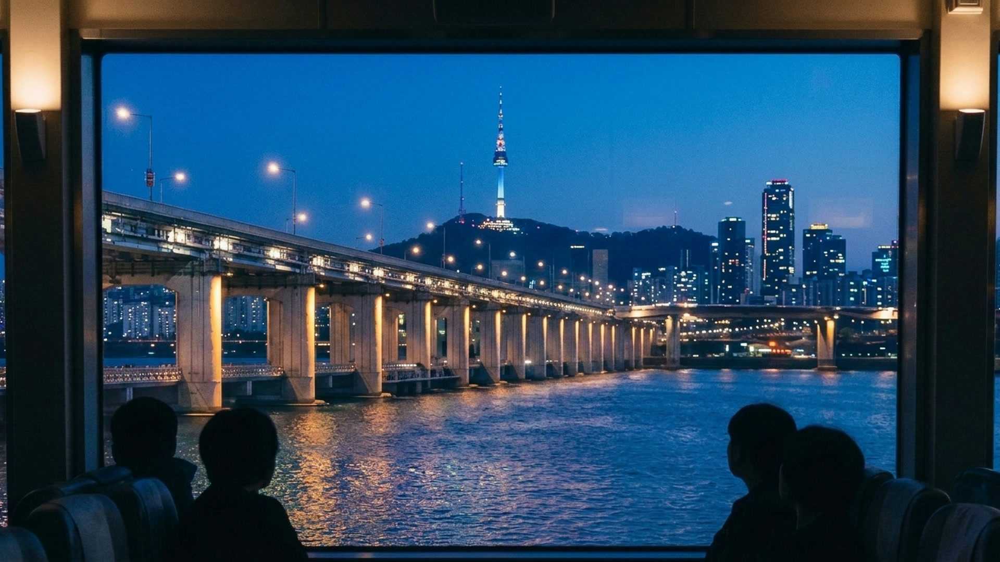
어둑한 선실 승객 실루엣 사이 분수 가동 직전 코발트블루 반포대교
✨ Frame B · 16:9 서울 도시풍경·조명 정밀 완성본 (클릭 시 1920×1080 원본)
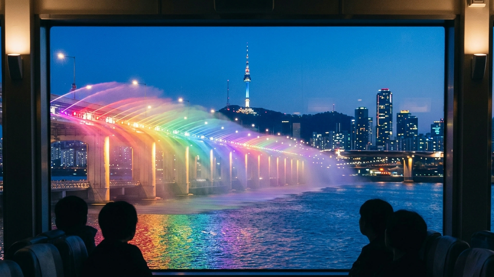
와이드 창 가득 반포대교 달빛무지개분수 오색 물줄기와 남산타워 야경
CUT 08
밤 20:30 · 성곽길 가로형 안드로이드 카메라 녹화 프레임
감정톤: curious (기록의 설렘)
🎙 이지원 감성 VO · 와이드 평면 프레임
📐 Frame A · 16:9 가로형 평면 프레임 기본 구도 (전환 전)
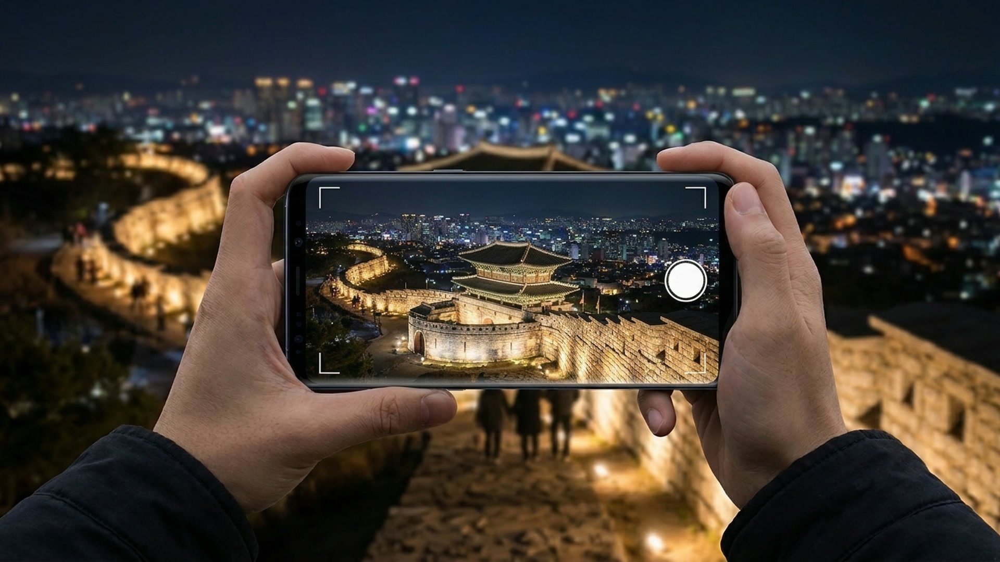
좌우 성곽길 산책 보케 속 두 손으로 든 가로형 스마트폰 촬영 대기 화면
✨ Frame B · 16:9 서울 도시풍경·조명 정밀 완성본 (클릭 시 1920×1080 원본)
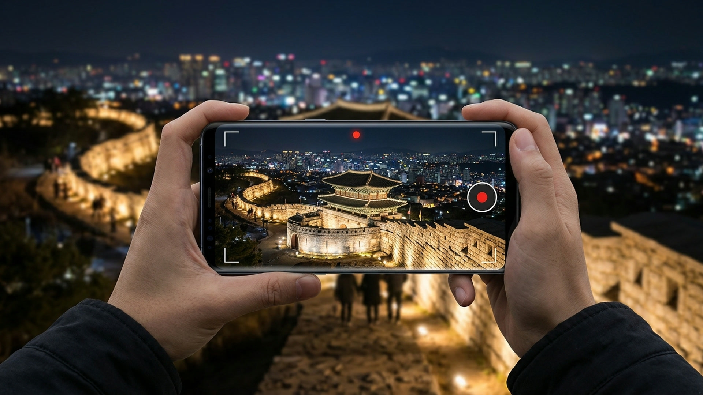
클린 녹화 뷰파인더(빨간 REC 점·포커스 코너) 속 성곽 암문과 서울 야경 바다
CUT 09
심야 22:00 · 와이드 굴다리 아치 & 하천 수면 프레임 (동행 안심벨)
감정톤: whisper (다정한 안심)
🎙 이지원 감성 VO · 와이드 평면 프레임
📐 Frame A · 16:9 가로형 평면 프레임 기본 구도 (전환 전)
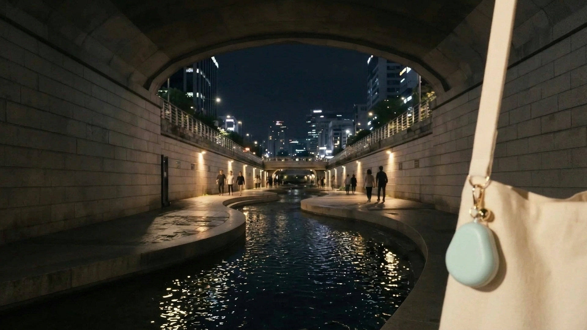
와이드 굴다리 아치(상·좌우)와 하천 수면(하단) 프레임 + 점등 전 민트 안심벨
✨ Frame B · 16:9 서울 도시풍경·조명 정밀 완성본 (클릭 시 1920×1080 원본)
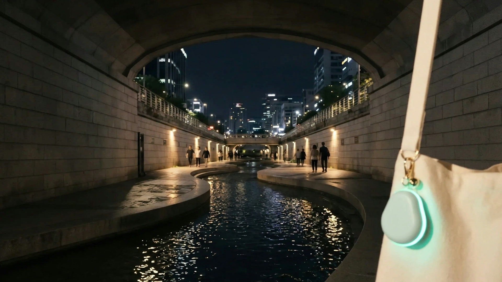
하천 황금 물빛 반영 강화 + 우측 가방 스트랩 동행 안심벨 에메랄드 LED 점등
CUT 10
피날레 22:30 · 한강 불꽃축제와 이지원 뒷모습 와이드 정자 프레임
감정톤: happy (벅찬 피날레)
👤 이지원 등장
📐 Frame A · 16:9 가로형 평면 프레임 기본 구도 (전환 전)
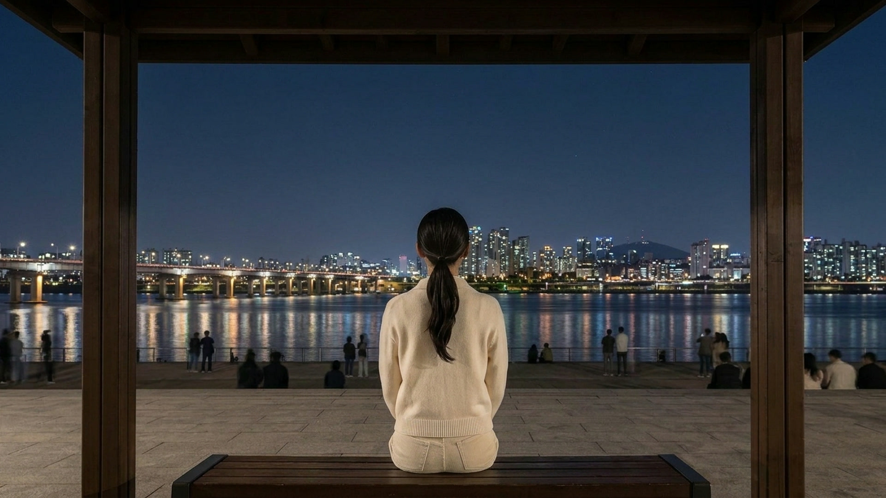
한강 수변 정자 와이드 프레임 너머 강변 벤치에 앉은 이지원 뒷모습과 시민들
✨ Frame B · 16:9 서울 도시풍경·조명 정밀 완성본 (클릭 시 1920×1080 원본)
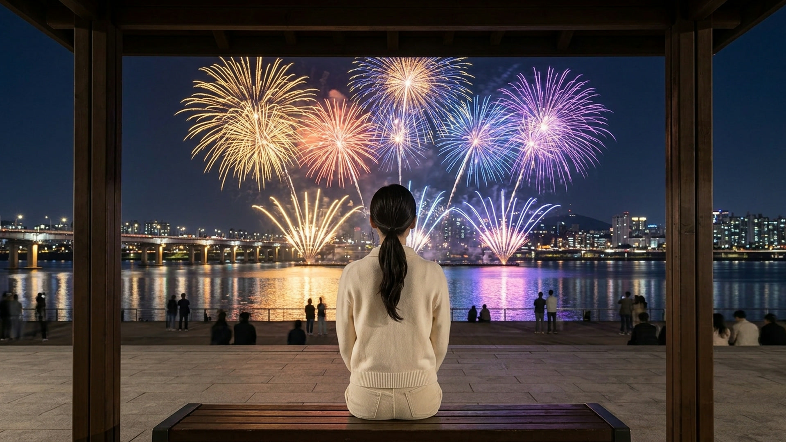
와이드 정자 프레임과 이지원 뒷모습 위로 밤하늘 가득 피어나는 오색 불꽃축제